| Symbol |
Description |
AD6644 | Description: A/D Converter, 14-Bit, 40 MSPS/65 MSPS, TQFP-52
Keys: ADC differential analog digital converter
Datasheet: https://www.analog.com/media/en/technical-documentation/data-sheets/AD6644.pdf |
AD6645 | Description: A/D Converter, 14-Bit, 80 MSPS/105 MSPS, TQFP-52
Keys: ADC differential analog digital converter
Datasheet: https://www.analog.com/media/en/technical-documentation/data-sheets/AD6645.pdf |
AD7171 | Description: Single channel Analog to Digial Converter, 16-bit, differential input, 125Hz, SPI interface
Keys: sigma delta adc spi 1ch
Datasheet: https://www.analog.com/media/en/technical-documentation/data-sheets/AD7171.pdf |
AD7298 | Description: 8 channel, 1MSPS, 12-bit SAR ADC with Temperature Sensor, LFCSP-20
Keys: ADC, 3.3V, SPI
Datasheet: https://www.analog.com/media/en/technical-documentation/data-sheets/AD7298.pdf |
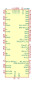
AD7606 | Description: 8-Channel DAS with 16-Bit, Bipolar Input, Simultaneous Sampling ADC, LQFP-64
Keys: 16bit DAS ADC 8channel 200KSPS
Datasheet: https://www.analog.com/media/en/technical-documentation/data-sheets/ad7606_7606-6_7606-4.pdf |
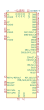
AD7606-4 | Description: 4-Channel DAS with 16-Bit, Bipolar Input, Simultaneous Sampling ADC, LQFP-64
Keys: 16bit DAS ADC 4channel 200KSPS
Datasheet: https://www.analog.com/media/en/technical-documentation/data-sheets/ad7606_7606-6_7606-4.pdf |
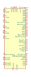
AD7606-6 | Description: 6-Channel DAS with 16-Bit, Bipolar Input, Simultaneous Sampling ADC, LQFP-64
Keys: 16bit DAS ADC 6channel 200KSPS
Datasheet: https://www.analog.com/media/en/technical-documentation/data-sheets/ad7606_7606-6_7606-4.pdf |
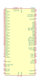
AD7616 | Description: 16-Channel DAS with 16-Bit, Bipolar Input, Dual Simultaneous Sampling ADC, 2x1MSPS ADC, Serial and parallel IO, LQFP-80
Keys: 16bit DAS ADC 16channel 1MSPS
Datasheet: https://www.analog.com/media/en/technical-documentation/data-sheets/AD7616.pdf |
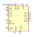
AD7682BCP | Description: 16-bit, 4-Channel, 250kSPS, PulSAR ADC, Bipolar-Unipolar, LFCSP-20
Keys: 16-Bit 4-Channel 250kSPS
Datasheet: https://www.analog.com/media/en/technical-documentation/data-sheets/AD7682_7689.pdf |
AD7689xCP | Description: 16-Bit, 8-Channel, 250 kSPS PulSAR ADC, LFSCP-20
Keys: ADC, SPI
Datasheet: https://www.analog.com/media/en/technical-documentation/data-sheets/AD7682_7689.pdf |
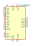
AD7699BCP | Description: 16-Bit, 8-Channel, 500 kSPS PulSAR ADC, LFSCP-20
Keys: ADC, SPI
Datasheet: https://www.analog.com/media/en/technical-documentation/data-sheets/AD7699.pdf |
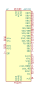
AD7722 | Description: 16-Bit, 195 kSPS CMOS, Sigma-Delta ADC, MQFP-44
Keys: adc 1ch 16bit parallel serial
Datasheet: https://www.analog.com/media/en/technical-documentation/data-sheets/AD7722.pdf |
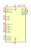
AD7746 | Description: 24-bit capacitance-to-digital converter with temperature sensor, TSSOP-16
Keys: adc cdc capacitance
Datasheet: https://www.analog.com/media/en/technical-documentation/data-sheets/AD7745_7746.pdf |
AD7794 | Description: 24-Bit, 6-Channel Sigma-Delta ADC, TSSOP-28
Keys: adc 6ch 24bit serial
Datasheet: https://www.analog.com/media/en/technical-documentation/data-sheets/AD7794_7795.pdf |
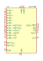
AD7795 | Description: 16-Bit, 6-Channel Sigma-Delta ADC, TSSOP-28
Keys: adc 6ch 16bit serial
Datasheet: https://www.analog.com/media/en/technical-documentation/data-sheets/AD7794_7795.pdf |
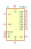
AD7819 | Description: Analog to Digital 8 bits converter, PDIP/SOIC/TSSOP-16
Keys: CAD
Datasheet: https://www.analog.com/media/en/technical-documentation/data-sheets/AD7819.pdf |
AD7949BCP | Description: 14-Bit, 8-Channel, 250 kSPS PulSAR ADC, LFSCP-20
Keys: ADC, SPI
Datasheet: https://www.analog.com/media/en/technical-documentation/data-sheets/AD7949.pdf |
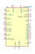
AD9280ARS | Description: Video ADC (32 Mhz), SSOP-28
Keys: ADC CAN VIDEO
Datasheet: https://www.analog.com/media/en/technical-documentation/data-sheets/AD9280.pdf |
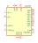
AD9283 | Description: ADC 50MHz 8 bits, SSOP-20
Keys: ADC
Datasheet: https://www.analog.com/media/en/technical-documentation/data-sheets/AD9283.pdf |
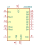
ADC0800 | Description: Analog to Digital 8 bits converter, DIP-18 (Hermetic)
Keys: CAD
Datasheet: http://www.ti.com/lit/ds/snas562/snas562.pdf |
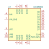
ADC08060 | Description: Fast ADC (20 .. 60 Mhz), TSSOP-24
Keys: ADC CAN VIDEO
Datasheet: http://www.ti.com/lit/ds/symlink/adc08060.pdf |
ADC081C021CIMM | Description: I2C-Compatible, 8-Bit Analog-to-Digital Converter with Alert Function, MSOP-8
Keys: ADC I2C 8-bit Alert
Datasheet: http://www.ti.com/lit/ds/symlink/adc081c021.pdf |
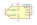
ADC0832 | Description: 2 inputs AD Converter (serial output),
Keys: ADC CAN
Datasheet: http://www.ti.com/lit/ds/symlink/adc0831-n.pdf |
ADC101C021CIMM | Description: I2C-Compatible, 10-Bit Analog-to-Digital Converter with Alert Function, MSOP-8
Keys: ADC I2C 10-bit Alert
Datasheet: http://www.ti.com/lit/ds/symlink/adc101c021.pdf |
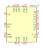
ADC1173 | Description: Fast ADC (15 Mhz), TSSOP-24
Keys: ADC CAN VIDEO
Datasheet: http://www.ti.com/lit/ds/symlink/adc1173.pdf |
ADC121C021CIMM | Description: I2C-Compatible, 12-Bit Analog-to-Digital Converter with Alert Function, MSOP-8
Keys: ADC I2C 12-bit Alert
Datasheet: http://www.ti.com/lit/ds/symlink/adc121c021.pdf |
ADC128D818 | Description: 12-Bit, 8-Channel, ADC System Monitor With Temperature Sensor, I2C Interface, TSSOP-16
Keys: ADC 8 Channels TSSOP I2C
Datasheet: http://www.ti.com/lit/ds/symlink/adc128d818.pdf |
ADS1013IDGS | Description: Ultra-Small, Low-Power, I2C-Compatible, 3.3-kSPS, 12-Bit ADCs With Internal Reference and Oscillator, VSSOP-10
Keys: 12 bit single channel I2C ADC
Datasheet: http://www.ti.com/lit/ds/symlink/ads1015.pdf |
ADS1014IDGS | Description: Ultra-Small, Low-Power, I2C-Compatible, 3.3-kSPS, 12-Bit ADCs With Internal Reference, Oscillator, and Programmable Comparator, VSSOP-10
Keys: 12 bit single channel I2C ADC
Datasheet: http://www.ti.com/lit/ds/symlink/ads1015.pdf |
ADS1015IDGS | Description: Ultra-Small, Low-Power, I2C-Compatible, 3.3-kSPS, 12-Bit ADCs With Internal Reference, Oscillator, and Programmable Comparator, VSSOP-10
Keys: 12 bit 4 channel I2C ADC
Datasheet: http://www.ti.com/lit/ds/symlink/ads1015.pdf |
ADS1018IDGS | Description: Ultrasmall, Low-Power, SPI-Compatible, 12-Bit, Analog-to-Digital Converter With Internal Reference and Temperature Sensor, VSSOP-10
Keys: 12 bit 4 channel SPI ADC
Datasheet: http://www.ti.com/lit/ds/symlink/ads1018.pdf |
ADS1110 | Description: 16 Bit Analog to Digital converter with on board reference
Keys: 16 Bit Analog to digital converter ADC
Datasheet: http://www.ti.com/lit/ds/symlink/ads1110.pdf |
ADS1113IDGS | Description: Ultra-Small, Low-Power, I2C-Compatible, 860-SPS, 16-Bit ADCs With Internal Reference and Oscillator, VSSOP-10
Keys: 16 bit single channel I2C ADC
Datasheet: http://www.ti.com/lit/ds/symlink/ads1113.pdf |
ADS1114IDGS | Description: Ultra-Small, Low-Power, I2C-Compatible, 860-SPS, 16-Bit ADCs With Internal Reference, Oscillator, and Programmable Comparator, VSSOP-10
Keys: 16 bit single channel I2C ADC
Datasheet: http://www.ti.com/lit/ds/symlink/ads1113.pdf |
ADS1115IDGS | Description: Ultra-Small, Low-Power, I2C-Compatible, 860-SPS, 16-Bit ADCs With Internal Reference, Oscillator, and Programmable Comparator, VSSOP-10
Keys: 16 bit 4 channel I2C ADC
Datasheet: http://www.ti.com/lit/ds/symlink/ads1113.pdf |
ADS1118IDGS | Description: Ultrasmall, Low-Power, SPI-Compatible, 16-Bit Analog-to-Digital Converter with Internal Reference and Temperature Sensor, VSSOP-10
Keys: 16 bit 4 channel SPI ADC
Datasheet: http://www.ti.com/lit/ds/symlink/ads1118.pdf |
ADS1120-PW | Description: Low-power, quad-input, 16-bit analog to digital converter, integrated temperature sensor, SPI interface, TSSOP-16 package
Keys: adc spi
Datasheet: http://www.ti.com/lit/ds/symlink/ads1120.pdf |
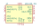
ADS1120-RVA | Description: Low-power, quad-input, 16-bit analog to digital converter, integrated temperature sensor, SPI interface, QFN-16 package
Keys: adc spi
Datasheet: http://www.ti.com/lit/ds/symlink/ads1120.pdf |
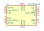
ADS1220xPW | Description: Low-power, quad-input, 24-bit analog to digital converter, integrated temperature sensor, SPI interface, TSSOP-16 package
Keys: adc spi
Datasheet: http://www.ti.com/lit/ds/symlink/ads1220.pdf |
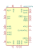
ADS1232IPW | Description: Single Bridge 24bit ADC for Sensors, TSSOP-24
Keys: ADC 24bit Sensors Dual Channel
Datasheet: http://www.ti.com/lit/ds/symlink/ads1232.pdf |
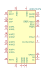
ADS1234IPW | Description: Dual Bridge 24bit ADC for Sensors, TSSOP-28
Keys: ADC 24bit Sensors Quad Channel
Datasheet: http://www.ti.com/lit/ds/symlink/ads1232.pdf |
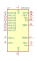
ADS1243 | Description: 24-bit ADC, 8 Channels, SPI compatible, PGA 1 to 128, TSSOP-20
Keys: 24bit ADC 8 Channels PGA SPI
Datasheet: http://www.ti.com/lit/ds/symlink/ads1243.pdf |
ADS1251 | Description: Single channel 24-bit Analog to Digital Converter, 5V supply, differential input, 20kHz, 2-wire serial interface, SOIC-8
Keys: delta-sigma adc low-power
Datasheet: http://www.ti.com/lit/ds/symlink/ads1251.pdf |
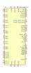
ADS1298xPAG | Description: ADS1298 Low-Power, 8-Channel, 24-Bit Analog Front-End for Biopotential Measurements, TQFP-64
Keys: 24bit ADC 8 Channels PGA SPI Biopotential
Datasheet: http://www.ti.com/lit/ds/symlink/ads1298.pdf |
ADS7029 | Description: Small-Size, Low-Power, 8-Bit, 2-MSPS, SAR ADC
Keys: 8 bit SAR ADC
Datasheet: http://www.ti.com/lit/ds/symlink/ads7029-q1.pdf |
ADS7039 | Description: Small-Size, Low-Power, 10-Bit, 2-MSPS, SAR ADC
Keys: 10 bit SAR ADC
Datasheet: http://www.ti.com/lit/ds/symlink/ads7039-q1.pdf |
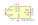
ADS7040xDCU | Description: Ultra-Low Power, Ultra-Small Size, 8-Bit, 1-MSPS, SAR ADC
Keys: 8 bit SAR ADC
Datasheet: http://www.ti.com/lit/ds/symlink/ads7040.pdf |
ADS7041xDCU | Description: Ultra-Low Power, Ultra-Small Size, 10-Bit, 1-MSPS, SAR ADC
Keys: 10 bit SAR ADC
Datasheet: http://www.ti.com/lit/ds/symlink/ads7041.pdf |
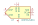
ADS7042xDCU | Description: Ultra-Low Power, Ultra-Small Size, 12-Bit, 1-MSPS, SAR ADC
Keys: 12 bit SAR ADC
Datasheet: http://www.ti.com/lit/ds/symlink/ads7042.pdf |
ADS7043xDCU | Description: Ultra-Low Power, Ultra-Small Size, 12-Bit, 1-MSPS, SAR ADC
Keys: 12 bit SAR ADC
Datasheet: http://www.ti.com/lit/ds/symlink/ads7043.pdf |
ADS7044xDCU | Description: Ultra-Low Power, Ultra-Small Size, 12-Bit, 1-MSPS, SAR ADC
Keys: 12 bit SAR ADC
Datasheet: http://www.ti.com/lit/ds/symlink/ads7044.pdf |
ADS7049 | Description: Small-Size, Low-Power, 12-Bit, 2-MSPS, SAR ADC
Keys: 12 bit SAR ADC
Datasheet: http://www.ti.com/lit/ds/symlink/ads7049-q1.pdf |
ADS7828 | Description: 12-Bits, 8-Channels, ADC, I2C, TSSOP-16
Keys: I2C ADC 12Bits
Datasheet: http://www.ti.com/lit/ds/symlink/ads7828.pdf |
ADS7866 | Description: Single Channel 12-bit ADC, 100-200ksps, SPI, micro-power, SOT-23-6
Keys: ADC
Datasheet: http://www.ti.com/lit/ds/symlink/ads7866.pdf |
ADS7867 | Description: Single Channel 10-bit ADC, 100-200ksps, SPI, micro-power, SOT-23-6
Keys: ADC
Datasheet: http://www.ti.com/lit/ds/symlink/ads7866.pdf |
ADS7868 | Description: Single Channel 8-bit ADC, 100-200ksps, SPI, micro-power, SOT-23-6
Keys: ADC
Datasheet: http://www.ti.com/lit/ds/symlink/ads7866.pdf |
ADS8681RUM | Description: 16-Bit, High-Speed, Single-Supply, SAR ADC Data Acquisition System with Programmable, Bipolar Input Ranges, 1MSPS, QFN-16
Keys: ADC SPI analog digital
Datasheet: http://www.ti.com/lit/ds/symlink/ads8681.pdf |
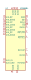
ADS8684 | Description: 16-Bit, 500-kSPS, 4-Channels, Single-Supply, SAR ADC with Bipolar Input Range, TSSOP-38
Keys: adc analog digital spi bipolar input
Datasheet: http://www.ti.com/lit/ds/symlink/ads8688.pdf |
ADS8685RUM | Description: 16-Bit, High-Speed, Single-Supply, SAR ADC Data Acquisition System with Programmable, Bipolar Input Ranges 500KSPS, QFN-16
Keys: ADC SPI analog digital
Datasheet: http://www.ti.com/lit/ds/symlink/ads8681.pdf |
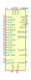
ADS8688 | Description: 16-Bit, 500-kSPS, 8-Channels, Single-Supply, SAR ADC with Bipolar Input Range, TSSOP-38
Keys: adc analog digital spi bipolar input
Datasheet: http://www.ti.com/lit/ds/symlink/ads8688.pdf |
ADS8689RUM | Description: 16-Bit, High-Speed, Single-Supply, SAR ADC Data Acquisition System with Programmable, Bipolar Input Ranges, 100KSPS, QFN-16
Keys: ADC SPI analog digital
Datasheet: http://www.ti.com/lit/ds/symlink/ads8681.pdf |
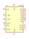
CA3300 | Description: Convertisseur A->D 6 bits rapide
Keys: ADC CAN
Datasheet: None |
ICL7106CPL | Description: 3 1/2 Digit, LCD Display, A/D Converter, DIP-40
Keys: LCD ADC
Datasheet: https://www.renesas.com/eu/en/www/doc/datasheet/icl7106-07-07s.pdf |
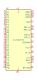
ICL7107CPL | Description: 3 1/2 Digit, LED Display, A/D Converter, DIP-40
Keys: LED ADC
Datasheet: https://www.renesas.com/eu/en/www/doc/datasheet/icl7106-07-07s.pdf |
| INA219AxD | Description: Zero-Drift, Bidirectional Current/Power Monitor (0-26V) With I2C Interface, SOIC-8
Keys: ADC I2C 16-Bit Oversampling Current Shunt
Datasheet: http://www.ti.com/lit/ds/symlink/ina219.pdf |
| INA219AxDCN | Description: Zero-Drift, Bidirectional Current/Power Monitor (0-26V) With I2C Interface, SOT-23-8
Keys: ADC I2C 16-Bit Oversampling Current Shunt
Datasheet: http://www.ti.com/lit/ds/symlink/ina219.pdf |
| INA219BxD | Description: Zero-Drift, HighAccuracy, Bidirectional Current/Power Monitor (0-26V) With I2C Interface, SOIC-8
Keys: ADC I2C 16-Bit Oversampling Current Shunt
Datasheet: http://www.ti.com/lit/ds/symlink/ina219.pdf |
| INA219BxDCN | Description: Zero-Drift, HighAccuracy, Bidirectional Current/Power Monitor (0-26V) With I2C Interface, SOT-23-8
Keys: ADC I2C 16-Bit Oversampling Current Shunt
Datasheet: http://www.ti.com/lit/ds/symlink/ina219.pdf |
| INA226 | Description: High-Side or Low-Side Measurement, Bi-Directional Current and Power Monitor (0-36V) with I2C Compatible Interface, VSSOP-10
Keys: ADC I2C 16-Bit Oversampling Current Shunt
Datasheet: http://www.ti.com/lit/ds/symlink/ina226.pdf |
| INA233 | Description: High-Side or Low-Side Measurement, Bi-Directional Current and Power Monitor (0-36V) with I2C, SMBus-, and PMBus-Compatible Interface, VSSOP-10
Keys: ADC I2C 16-Bit Oversampling Current Shunt
Datasheet: https://www.ti.com/lit/ds/symlink/ina233.pdf |
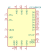
LTC1406CGN | Description: ADC 8bit Low Power 20Msps, SSOP-24
Keys: Low Power ADC 8bit 20Msps
Datasheet: https://www.analog.com/media/en/technical-documentation/data-sheets/1406f.pdf |
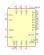
LTC1406IGN | Description: ADC 8bit Low Power 20Msps, SSOP-24
Keys: Low Power ADC 8bit 20Msps
Datasheet: https://www.analog.com/media/en/technical-documentation/data-sheets/1406f.pdf |
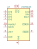
LTC1594CS | Description: Micropower 12-bit 4 Channel ADC, Serial IO, SOIC-16
Keys: 12bit ADC 4 Channel
Datasheet: https://www.analog.com/media/en/technical-documentation/data-sheets/15948fb.pdf |
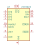
LTC1594IS | Description: Micropower 12-bit 4 Channel ADC, Serial IO, SO-16
Keys: 12bit ADC 4 Channel
Datasheet: https://www.analog.com/media/en/technical-documentation/data-sheets/15948fb.pdf |
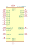
LTC1598CG | Description: Micropower 12-bit 8 Channel ADC, Serial IO, SSOP-24
Keys: 12bit ADC 4 Channel
Datasheet: https://www.analog.com/media/en/technical-documentation/data-sheets/15948fb.pdf |
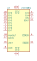
LTC1598IG | Description: Micropower 12-bit 8 Channel ADC, Serial IO, SSOP-24
Keys: 12bit ADC 4 Channel
Datasheet: https://www.analog.com/media/en/technical-documentation/data-sheets/15948fb.pdf |
LTC1742 | Description: 14-Bit, 65Msps, Low Noise, ADC, TSSOP-48
Keys: ADC analog digital converter pipeline
Datasheet: https://www.analog.com/media/en/technical-documentation/data-sheets/1742f.pdf |
LTC1744 | Description: 14-Bit, 50Msps, ADC, TSSOP-48
Keys: ADC analog digital converter pipeline
Datasheet: https://www.analog.com/media/en/technical-documentation/data-sheets/1744f.pdf |
LTC1746 | Description: Low Power, 14-Bit, 25Msps, ADC, TSSOP-48
Keys: ADC analog digital converter pipeline
Datasheet: https://www.analog.com/media/en/technical-documentation/data-sheets/1746f.pdf |
LTC1748 | Description: 14-Bit, 80Msps, Low Noise, ADC, TSSOP-48
Keys: ADC analog digital converter pipeline
Datasheet: https://www.analog.com/media/en/technical-documentation/data-sheets/1748fa.pdf |
LTC1864 | Description: Single channel 16-bit Analog to Digial Converter, 5V supply, differential input, 150ksps, SPI interface
Keys: sigma-delta adc spi 1ch
Datasheet: https://www.analog.com/media/en/technical-documentation/data-sheets/18645fb.pdf |
LTC1864L | Description: Single channel 16-bit Analog to Digial Converter, 3V supply, differential input, 150ksps, SPI interface
Keys: sigma-delta adc spi 1ch
Datasheet: https://www.analog.com/media/en/technical-documentation/data-sheets/18645lfs.pdf |
LTC1865-MS | Description: Dual channel 16-bit Analog to Digital Converter, 5V supply, 150ksps, SPI interface
Keys: sigma-delta adc 2ch
Datasheet: https://www.analog.com/media/en/technical-documentation/data-sheets/18645fb.pdf |
LTC1865-S8 | Description: Dual channel 16-bit Analog to Digital Converter, 5V supply, 150ksps, SPI interface
Keys: sigma-delta adc 2ch
Datasheet: https://www.analog.com/media/en/technical-documentation/data-sheets/18645fb.pdf |
LTC1865L-MS | Description: Dual channel 16-bit Analog to Digital Converter, 3V supply, 150ksps, SPI interface
Keys: sigma-delta adc 2ch
Datasheet: https://www.analog.com/media/en/technical-documentation/data-sheets/18645lfs.pdf |
LTC1865L-S8 | Description: Dual channel 16-bit Analog to Digital Converter, 3V supply, 150ksps, SPI interface
Keys: sigma-delta adc 2ch
Datasheet: https://www.analog.com/media/en/technical-documentation/data-sheets/18645lfs.pdf |
LTC2282xUP | Description: Dual-Channel, 12-Bit Low Power ADC, 105Msps, QFN-64
Keys: ADC
Datasheet: https://www.analog.com/media/en/technical-documentation/data-sheets/2282fb.pdf |
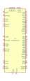
LTC2284xUP | Description: Dual-Channel, 14-Bit Low Power ADC, 105Msps, QFN-64
Keys: ADC
Datasheet: https://www.analog.com/media/en/technical-documentation/data-sheets/2284fa.pdf |
LTC2290xUP | Description: Dual-Channel, 12-Bit Low Power ADC, 10Msps, QFN-64
Keys: ADC
Datasheet: https://www.analog.com/media/en/technical-documentation/data-sheets/2290fa.pdf |
LTC2291xUP | Description: Dual-Channel, 12-Bit Low Power ADC, 25Msps, QFN-64
Keys: ADC
Datasheet: https://www.analog.com/media/en/technical-documentation/data-sheets/229321fa.pdf |
LTC2292xUP | Description: Dual-Channel, 12-Bit Low Power ADC, 40Msps, QFN-64
Keys: ADC
Datasheet: https://www.analog.com/media/en/technical-documentation/data-sheets/229321fa.pdf |
LTC2293xUP | Description: Dual-Channel, 12-Bit Low Power ADC, 65Msps, QFN-64
Keys: ADC
Datasheet: https://www.analog.com/media/en/technical-documentation/data-sheets/229321fa.pdf |
LTC2294xUP | Description: Dual-Channel, 12-Bit Low Power ADC, 80Msps, QFN-64
Keys: ADC
Datasheet: https://www.analog.com/media/en/technical-documentation/data-sheets/2294fa.pdf |
LTC2295xUP | Description: Dual-Channel, 14-Bit Low Power ADC, 10Msps, QFN-64
Keys: ADC
Datasheet: https://www.analog.com/media/en/technical-documentation/data-sheets/2295fa.pdf |
LTC2296xUP | Description: Dual-Channel, 14-Bit Low Power ADC, 25Msps, QFN-64
Keys: ADC
Datasheet: https://www.analog.com/media/en/technical-documentation/data-sheets/229876fa.pdf |
LTC2297xUP | Description: Dual-Channel, 14-Bit Low Power ADC, 40Msps, QFN-64
Keys: ADC
Datasheet: https://www.analog.com/media/en/technical-documentation/data-sheets/229876fa.pdf |
LTC2298xUP | Description: Dual-Channel, 14-Bit Low Power ADC, 65Msps, QFN-64
Keys: ADC
Datasheet: https://www.analog.com/media/en/technical-documentation/data-sheets/229876fa.pdf |
LTC2299xUP | Description: Dual-Channel, 14-Bit Low Power ADC, 80Msps, QFN-64
Keys: ADC
Datasheet: https://www.analog.com/media/en/technical-documentation/data-sheets/2299fa.pdf |
| LTC2309_QFN | Description: 8 Channels, 12-Bit SAR ADC, I2C interface, QFN-24 package
Keys: LT ADC 12bit I2C SAR QFN
Datasheet: https://www.analog.com/media/en/technical-documentation/data-sheets/2309fd.pdf |
| LTC2309_TSSOP | Description: 8 Channels, 12-Bit SAR ADC, I2C interface, TSSOP-20 package
Keys: LT ADC 12bit I2C SAR TSSOP
Datasheet: https://www.analog.com/media/en/technical-documentation/data-sheets/2309fd.pdf |
LTC2358-16 | Description: LTC2358 Buffered Octal, 16 bit, 200ksps/Ch Differential +-10.24V Simultaneous Sampling ADC, 30Vpp common mode range, LQFP-48
Keys: 16bit Simultaneous Sampling ADC 8 Channels SPI buffered
Datasheet: https://www.analog.com/media/en/technical-documentation/data-sheets/235816f.pdf |
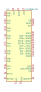
LTC2358-18 | Description: LTC2358 Buffered Octal, 18 bit, 200ksps/Ch Differential +-10.24V Simultaneous Sampling ADC, 30Vpp common mode range, LQFP-48
Keys: 18bit Simultaneous Sampling ADC 8 Channels SPI buffered
Datasheet: https://www.analog.com/media/en/technical-documentation/data-sheets/235818f.pdf |
LTC2451xDDB | Description: Analog to Digital Converter, Single Channel, 16-Bit, 30/60 SPS, 2.7V to 5.5V, I2C interface, DFN-8
Keys: analog to digital converter adc i2c twi single channel delta sigma 16 bit
Datasheet: https://www.analog.com/media/en/technical-documentation/data-sheets/2451fg.pdf |
LTC2451xTS8 | Description: Analog to Digital Converter, Single Channel, 16-Bit, 30/60 SPS, 2.7V to 5.5V, I2C interface, TSOT-23-6
Keys: analog to digital converter adc i2c twi single channel delta sigma 16 bit
Datasheet: https://www.analog.com/media/en/technical-documentation/data-sheets/2451fg.pdf |
LTC2508CDKD-32 | Description: 32-Bit Oversampling ADC with Configurable Digital Filter, 0C to 70C, DFN-24 package
Keys: LT ADC 32bit
Datasheet: https://www.analog.com/media/en/technical-documentation/data-sheets/250832fc.pdf |
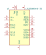
LTC2508IDKD-32 | Description: 32-Bit Oversampling ADC with Configurable Digital Filter, -40°C to 85°C, DFN-24 package
Keys: LT ADC 32bit
Datasheet: https://www.analog.com/media/en/technical-documentation/data-sheets/250832fc.pdf |
| LTC4151xMS | Description: High Voltage I2C Current and Voltage Monitor, MSOP-10
Keys: I2C Current Monitor
Datasheet: https://www.analog.com/media/en/technical-documentation/data-sheets/4151ff.pdf |
MAX1112 | Description: 8-Channel Single-Ended or 4-Channel Differential 8-Bit ADC, SSOP-20
Keys: MAXIM ADC 5V 8-Bit SPI QSPI MICROWIRE
Datasheet: http://datasheets.maximintegrated.com/en/ds/MAX1112-MAX1113.pdf |
MAX11120xTI | Description: 4-Channel 8-Bit 1.5MHz Full-Linear Bandwidth External Reference High-Speed Low-Power ADC, QFN-28
Keys: MAXIM ADC 3.3V 8-Bit SPI
Datasheet: https://datasheets.maximintegrated.com/en/ds/MAX11120-MAX11128.pdf |
MAX11121xTI | Description: 4-Channel 10-Bit 1.5MHz Full-Linear Bandwidth External Reference High-Speed Low-Power ADC, QFN-28
Keys: MAXIM ADC 3.3V 10-Bit SPI
Datasheet: https://datasheets.maximintegrated.com/en/ds/MAX11120-MAX11128.pdf |
MAX11122xTI | Description: 4-Channel 12-Bit 1.5MHz Full-Linear Bandwidth External Reference High-Speed Low-Power ADC, QFN-28
Keys: MAXIM ADC 3.3V 12-Bit SPI
Datasheet: https://datasheets.maximintegrated.com/en/ds/MAX11120-MAX11128.pdf |
MAX11123xTI | Description: 8-Channel 8-Bit 1.5MHz Full-Linear Bandwidth External Reference High-Speed Low-Power ADC, QFN-28
Keys: MAXIM ADC 3.3V 8-Bit SPI
Datasheet: https://datasheets.maximintegrated.com/en/ds/MAX11120-MAX11128.pdf |
MAX11124xTI | Description: 8-Channel 10-Bit 1.5MHz Full-Linear Bandwidth External Reference High-Speed Low-Power ADC, QFN-28
Keys: MAXIM ADC 3.3V 10-Bit SPI
Datasheet: https://datasheets.maximintegrated.com/en/ds/MAX11120-MAX11128.pdf |
MAX11125xTI | Description: 8-Channel 12-Bit 1.5MHz Full-Linear Bandwidth External Reference High-Speed Low-Power ADC, QFN-28
Keys: MAXIM ADC 3.3V 12-Bit SPI
Datasheet: https://datasheets.maximintegrated.com/en/ds/MAX11120-MAX11128.pdf |
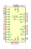
MAX11126xTI | Description: 16-Channel 8-Bit 1.5MHz Full-Linear Bandwidth External Reference High-Speed Low-Power ADC, QFN-28
Keys: MAXIM ADC 3.3V 8-Bit SPI
Datasheet: https://datasheets.maximintegrated.com/en/ds/MAX11120-MAX11128.pdf |
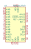
MAX11127xTI | Description: 16-Channel 10-Bit 1.5MHz Full-Linear Bandwidth External Reference High-Speed Low-Power ADC, QFN-28
Keys: MAXIM ADC 3.3V 10-Bit SPI
Datasheet: https://datasheets.maximintegrated.com/en/ds/MAX11120-MAX11128.pdf |
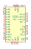
MAX11128xTI | Description: 16-Channel 12-Bit 1.5MHz Full-Linear Bandwidth External Reference High-Speed Low-Power ADC, QFN-28
Keys: MAXIM ADC 3.3V 12-Bit SPI
Datasheet: https://datasheets.maximintegrated.com/en/ds/MAX11120-MAX11128.pdf |
MAX1113 | Description: 4-Channel Single-Ended or 2-Channel Differential 8-Bit ADC, QSOP-16
Keys: MAXIM ADC 5V 8-Bit SPI QSPI MICROWIRE
Datasheet: http://datasheets.maximintegrated.com/en/ds/MAX1112-MAX1113.pdf |
MAX11612 | Description: 4-channel single-ended or 2-channel, differential, 12-bit ADC, I2C, 4.096V internal reference, 8-MSOP package
Keys: adc i2c 4ch
Datasheet: https://datasheets.maximintegrated.com/en/ds/MAX11612-MAX11617.pdf |
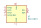
MAX11613 | Description: 4-channel single-ended or 2-channel, differential, 12-bit ADC, I2C, 2.048V internal reference, 8-MSOP package
Keys: adc i2c 4ch
Datasheet: https://datasheets.maximintegrated.com/en/ds/MAX11612-MAX11617.pdf |
MAX11614 | Description: 8-channel single-ended or 4-channel, differential, 12-bit ADC, I2C, 4.096V internal reference, 16-QSOP package
Keys: adc i2c 8ch
Datasheet: https://datasheets.maximintegrated.com/en/ds/MAX11612-MAX11617.pdf |
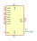
MAX11615 | Description: 8-channel single-ended or 4-channel, differential, 12-bit ADC, I2C, 2.048V internal reference, 16-QSOP package
Keys: adc i2c 8ch
Datasheet: https://datasheets.maximintegrated.com/en/ds/MAX11612-MAX11617.pdf |
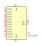
MAX11616 | Description: 12-channel single-ended or 6-channel, differential, 12-bit ADC, I2C, 4.096V internal reference, 16-QSOP package
Keys: adc i2c 12ch
Datasheet: https://datasheets.maximintegrated.com/en/ds/MAX11612-MAX11617.pdf |
MAX11617 | Description: 12-channel single-ended or 6-channel, differential, 12-bit ADC, I2C, 2.048V internal reference, 16-QSOP package
Keys: adc i2c 12ch
Datasheet: https://datasheets.maximintegrated.com/en/ds/MAX11612-MAX11617.pdf |
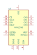
MAX1248 | Description: 4-Channel 10-Bit ADC with Serial Interface, +2.7V to +5.25V, Internal 2.5V Reference, Low-Power
Keys: 10-Bit ADC Internal Reference Serial 4-Channel Maxim
Datasheet: https://datasheets.maximintegrated.com/en/ds/MAX1248-MAX1249.pdf |
MAX1249 | Description: 4-Channel 10-Bit ADC with Serial Interface, +2.7V to +5.25V, Low-Power
Keys: 10-Bit ADC Serial 4-Channel Maxim
Datasheet: https://datasheets.maximintegrated.com/en/ds/MAX1248-MAX1249.pdf |
MAX1274 | Description: 1.8Msps, Single-Supply, Low-Power, True-Differential, 12-Bit ADCs, bipolar input
Keys: 12bit ADC 1CH diff differential
Datasheet: https://datasheets.maximintegrated.com/en/ds/MAX1274-MAX1275.pdf |
MAX1275 | Description: 1.8Msps, Single-Supply, Low-Power, True-Differential, 12-Bit ADCs, unipolar input
Keys: 12bit ADC 1CH diff differential
Datasheet: https://datasheets.maximintegrated.com/en/ds/MAX1274-MAX1275.pdf |
MCP3002 | Description: Dual Channel 10-Bit A/D Converter with SPI Serial Interface
Keys: Dual Channel 10-Bit ADC SPI 2CH
Datasheet: http://ww1.microchip.com/downloads/en/DeviceDoc/21294E.pdf |
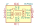
MCP3004 | Description: 4-Channel 10-Bit A/D Converters with SPI Interface
Keys: 10-Bit ADC SPI 4CH
Datasheet: http://ww1.microchip.com/downloads/en/DeviceDoc/21295C.pdf |
MCP3008 | Description: A/D Converter, 10-Bit, 8-Channel, SPI Interface , 2.7V-5.5V
Keys: 12bit ADC Reference Single Supply SPI 8CH
Datasheet: http://ww1.microchip.com/downloads/en/DeviceDoc/21295d.pdf |
MCP3201 | Description: 2.7V 12-Bit A/D Converter with SPI Serial Interface, PDIP-8/SOIC-8/MSOP-8/TSSOP-8
Keys: 12-Bit Differential ADC SPI 1ch
Datasheet: http://ww1.microchip.com/downloads/en/DeviceDoc/21290D.pdf |
MCP3202 | Description: A/D Converter, 12-Bit, 2-Channel, SPI Interface, 2.7V-5.5V
Keys: 12bit ADC Reference Single Supply SPI 2ch
Datasheet: http://ww1.microchip.com/downloads/en/DeviceDoc/21034D.pdf |
MCP3204 | Description: A/D Converter, 12-Bit, 4-Channel, SPI Interface, 2.7V-5.5V
Keys: 12bit ADC Reference Single Supply SPI 4ch
Datasheet: http://ww1.microchip.com/downloads/en/DeviceDoc/21298c.pdf |
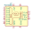
MCP3208 | Description: A/D Converter, 12-Bit, 8-Channel, SPI Interface , 2.7V-5.5V
Keys: 12bit ADC Reference Single Supply SPI 8ch
Datasheet: http://ww1.microchip.com/downloads/en/DeviceDoc/21298c.pdf |
MCP3301 | Description: 13-Bit Differential Input, Low Power A/D Converter with SPI Interface
Keys: 13-Bit Differential ADC SPI 1ch
Datasheet: http://ww1.microchip.com/downloads/en/DeviceDoc/21700D.pdf |
MCP3421A0T-ECH | Description: Single Delta-Sigma 18bit Analog to Digital Converter, I2C Interface, SOT-23-6
Keys: Sigma-Delta ADC Converter 18bit I2C 1ch
Datasheet: http://ww1.microchip.com/downloads/en/DeviceDoc/22003e.pdf |
| MCP3422 | Description: 2-Channel, 18-Bit, Delta-Sigma AD-Converter, IC Interface, Reference
Keys: 18-Bit ADC I2C IIC IC Delta-Sigma-ADC Delta-Sigma-ADC Reference 2ch
Datasheet: http://ww1.microchip.com/downloads/en/DeviceDoc/22088c.pdf |
| MCP3423 | Description: 2-Channel, 18-Bit, Delta-Sigma AD-Converter, IC Interface, Reference, MSOP
Keys: 18-Bit ADC I2C IIC IC Delta-Sigma-ADC Delta-Sigma-ADC Reference 2ch
Datasheet: http://ww1.microchip.com/downloads/en/DeviceDoc/22088c.pdf |
| MCP3424 | Description: 4-Channel, 18-Bit, Delta-Sigma AD-Converter, IC Interface, Reference
Keys: 18-Bit ADC I2C IIC IC Delta-Sigma-ADC Delta-Sigma-ADC Reference 4ch
Datasheet: http://ww1.microchip.com/downloads/en/DeviceDoc/22088c.pdf |
| MCP3425A0T-ECH | Description: Single Delta-Sigma 16bit Analog to Digital Converter, I2C Interface, SOT-23-6
Keys: Sigma-Delta ADC Converter 16bit I2C 1ch
Datasheet: http://ww1.microchip.com/downloads/en/DeviceDoc/22072b.pdf |
| MCP3425A1T-ECH | Description: Single Delta-Sigma 16bit Analog to Digital Converter, I2C Interface, SOT-23-6
Keys: Sigma-Delta ADC Converter 16bit I2C 1ch
Datasheet: http://ww1.microchip.com/downloads/en/DeviceDoc/22072b.pdf |
| MCP3425A2T-ECH | Description: Single Delta-Sigma 16bit Analog to Digital Converter, I2C Interface, SOT-23-6
Keys: Sigma-Delta ADC Converter 16bit I2C 1ch
Datasheet: http://ww1.microchip.com/downloads/en/DeviceDoc/22072b.pdf |
| MCP3425A3T-ECH | Description: Single Delta-Sigma 16bit Analog to Digital Converter, I2C Interface, SOT-23-6
Keys: Sigma-Delta ADC Converter 16bit I2C 1ch
Datasheet: http://ww1.microchip.com/downloads/en/DeviceDoc/22072b.pdf |
| MCP3426-xMC | Description: 16-Bit, Multi-Channel Analog-to-Digital Converter with I2C Interface and On-Board Reference, DFN-8
Keys: adc 2ch 16bit i2c
Datasheet: http://ww1.microchip.com/downloads/en/DeviceDoc/22226a.pdf |
| MCP3426-xMS | Description: 16-Bit, Multi-Channel Analog-to-Digital Converter with I2C Interface and On-Board Reference, MSOP-8
Keys: adc 2ch 16bit i2c
Datasheet: http://ww1.microchip.com/downloads/en/DeviceDoc/22226a.pdf |
| MCP3426-xSN | Description: 16-Bit, Multi-Channel ΔΣ Analog-to-Digital Converter with I2C Interface and On-Board Reference, SOIC-8
Keys: adc 2ch 16bit i2c
Datasheet: http://ww1.microchip.com/downloads/en/DeviceDoc/22226a.pdf |
| MCP3427-xMF | Description: 16-Bit, Multi-Channel Analog-to-Digital Converter with I2C Interface and On-Board Reference, DFN-10
Keys: adc 2ch 16bit i2c
Datasheet: http://ww1.microchip.com/downloads/en/DeviceDoc/22226a.pdf |
| MCP3427-xUN | Description: 16-Bit, Multi-Channel Analog-to-Digital Converter with I2C Interface and On-Board Reference, MSOP-10
Keys: adc 2ch 16bit i2c
Datasheet: http://ww1.microchip.com/downloads/en/DeviceDoc/22226a.pdf |
| MCP3428 | Description: 16-Bit, Multi-Channel Analog-to-Digital Converter with I2C Interface and On-Board Reference, SOIC-14/TSSOP-14
Keys: adc 4ch 16bit i2c
Datasheet: http://ww1.microchip.com/downloads/en/DeviceDoc/22226a.pdf |
MCP3550-50-EMS | Description: Single Delta-Sigma 22bit Analog to Digital Converter, SPI Interface, 50Hz Rejection, MSOP-8
Keys: Sigma-Delta ADC Converter 22bit SPI 1ch
Datasheet: http://ww1.microchip.com/downloads/en/devicedoc/21950c.pdf |
MCP3550-60-ESN | Description: Single Delta-Sigma 22bit Analog to Digital Converter, SPI Interface, 60Hz Rejection, MSOP-8
Keys: Sigma-Delta ADC Converter 22bit SPI 1ch
Datasheet: http://ww1.microchip.com/downloads/en/devicedoc/21950c.pdf |
MCP3551-EMS | Description: Single Delta-Sigma 22bit Analog to Digital Converter, SPI Interface, MSOP-8
Keys: Sigma-Delta ADC Converter 22bit SPI 1ch
Datasheet: http://ww1.microchip.com/downloads/en/devicedoc/21950c.pdf |
MCP3553-ESN | Description: Single Delta-Sigma 22bit Analog to Digital Converter, SPI Interface, MSOP-8
Keys: Sigma-Delta ADC Converter 22bit SPI 1ch
Datasheet: http://ww1.microchip.com/downloads/en/devicedoc/21950c.pdf |
| PAC1931x-xJQ | Description: Single-Channel DC Power/Energy Monitor with Accumulator, UQFN-16
Keys: I2C Current Shunt Energy Monitor
Datasheet: http://ww1.microchip.com/downloads/en/DeviceDoc/PAC1931-Family-Data-Sheet-DS20005850E.pdf |
| PAC1932x-xJQ | Description: Multi-Channel DC Power/Energy Monitor with Accumulator, UQFN-16
Keys: I2C Current Shunt Energy Monitor
Datasheet: http://ww1.microchip.com/downloads/en/DeviceDoc/PAC1931-Family-Data-Sheet-DS20005850E.pdf |
| PAC1933x-xJQ | Description: Multi-Channel DC Power/Energy Monitor with Accumulator, UQFN-16
Keys: I2C Current Shunt Energy Monitor
Datasheet: http://ww1.microchip.com/downloads/en/DeviceDoc/PAC1931-Family-Data-Sheet-DS20005850E.pdf |
| PAC1934x-xJQ | Description: Multi-Channel DC Power/Energy Monitor with Accumulator, UQFN-16
Keys: I2C Current Shunt Energy Monitor
Datasheet: http://ww1.microchip.com/downloads/en/DeviceDoc/PAC1931-Family-Data-Sheet-DS20005850E.pdf |